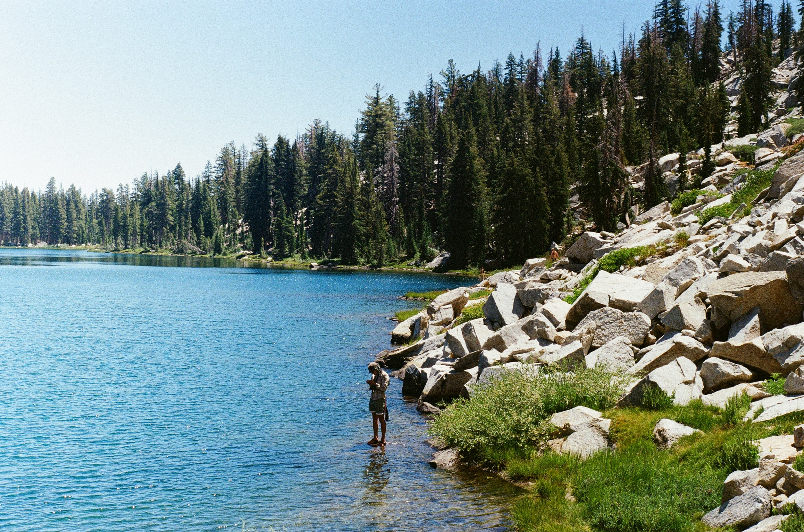

Welcome to thecuttycorner.com, an outdoor-centered blog hosted on the central coast of California. This site serves as a way to share my interests and happenings without doing so through social media. In the articles tab, there is a selection of projects, trip accounts, and tools that I have written and built over the last few years. In the trips tab, a record of my travels is listed in order of occurrence, with trip accounts linked for select adventures. In the videos tab, there is a selection of videos from my adventures over the last few years. The "Frog Bags" page serves as a portfolio of some of my sewing projects and occasionally has interest forms to order custom equipment. Thank you for visiting, and I hope you enjoy.

Newest Update
High flows and a good bush-whack in the northern Los Padres
Take a peek →